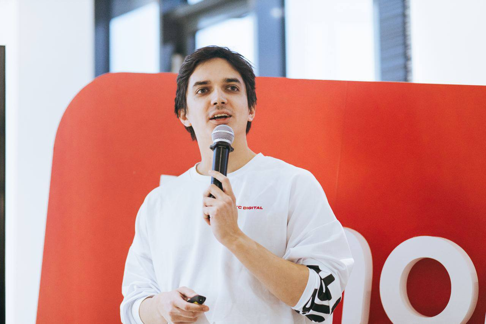

From classical information retrieval to neural retrieval, vector databases and retrieval-augmented generation — building search systems that actually ship.
Who teaches it, the arc of the course, schedule, assessment and how to succeed.
What retrieval is, the retrieve→rank cascade, and the framework for designing a search system for production.
Turning language into computable units (BPE & friends) and measuring how close two meanings are.
TF-IDF, BM25, inverted index, ranking metrics — then embeddings, neural retrieval, ANN, RAG.
| Week | Date | Topics & milestones |
|---|---|---|
| Week 1 | Wed Jun 3 | Search & IR + ML System Design · NLP, Tokenization & Similarity |
| Week 1 | Fri Jun 5 | Classical IR (TF-IDF, BM25, inverted index) · Ranking Metrics · Lab 1 · A1 out |
| Week 2 | Wed Jun 10 | Intro to DL for Search · Word embeddings + dimensionality reduction |
| Week 2 | Fri Jun 12 | Dense & contextual embeddings; contrastive learning · Transformers & Attention · A1 due |
| Week 3 | Wed Jun 17 | Bi-encoders (DPR, SBERT) · Cross-encoders & reranking; multi-stage pipelines |
| Week 3 | Fri Jun 19 | Late interaction (ColBERT); SPLADE; hybrid & RRF · Learning to Rank · Lab 2 · A2 out |
| Week 4 | Wed Jun 24 | Midterm Exam (full day) |
| Week 4 | Fri Jun 26 | ANN: HNSW, IVF, PQ; FAISS; vector DBs · Production: quantization, latency, caching · A2 due |
| Week 5 | Wed Jul 1 | RAG fundamentals; chunking · Query understanding & rewriting · A3 out |
| Week 5 | Fri Jul 3 | RAG evaluation (RAGAS, LLM-as-judge) · Agentic RAG (ReAct, Self-RAG, CRAG) · Lab 3 |
| Week 6 | Wed Jul 8 | Advanced RAG (multi-hop, GraphRAG) · Multimodal (CLIP, ColPali); ethics & safety · A3 due |
| Week 6 | Fri Jul 10 | Final Exam (full day) |
| Week 7 | Wed Jul 15 | Project Defense |
| Component | Weight | Component | Weight |
|---|---|---|---|
| Assignments 1–3 | 3 × 5% | Midterm Exam | 20% |
| Labs 1–3 | 3 × 5% | Final Exam | 30% |
| Project Defense | 20% | Total | 100% |
Grades: A (90–100] · B (70–90] · C [50–70] · D [0–50)

MSc in Robotics & Computer Vision, Innopolis University (2021) · PhD student in Deep Learning & Brain–Computer Interfaces · Lead Developer at MWS RnD, with a background in machine learning for banking. Has taught Probability & Statistics, Digital Signal Processing, Machine Learning and Deep Learning at Innopolis University, SPbU and HSE.
Contact: a.nasibullin@innopolis.university